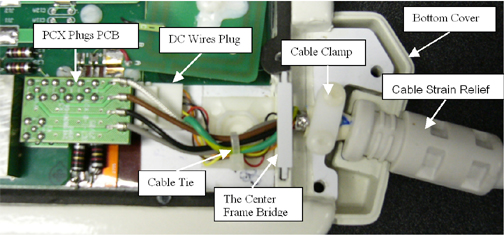
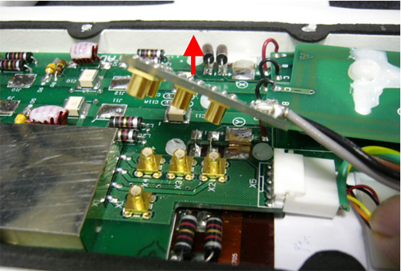
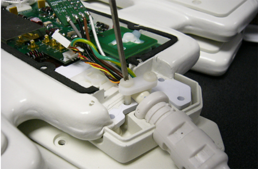

Operating Documentation
Direction 5440000, Rev# 5
Signa HDxt Service Methods
Module Version 5.0, Version Date 3/23/10
Operating Documentation |
| Required Persons | Preliminary Reqs | Procedure | Finalization |
|---|---|---|---|
| 1 | Not Applicable | 30 mins | Not Applicable |
Procedure for replacing the cable assembly on the 3.0T HD 8-Channel Torso Coil by GE/USAI catalog M3335LN.
| Item | Qty | Effectivity | Part# | Manufacturer | |
|---|---|---|---|---|---|
| Standard Tool Kit | 1 | - | - | - | |
| Pair of Tweezers | 1 | - | - | - | |
| Item | Qty | Effectivity | Part# | Manufacturer | |
|---|---|---|---|---|---|
| GE 3.0T HD 8-Channel Torso FRU Cable | 1 | - | 2416958 | - | |
| ||||
| To be performed by Authorized Service Engineer Only | ||||
| NOTE: | The procedure is for anterior or posterior. |
Remove coil center cover by removing all screws around its perimeter (see Illustration 1). Check the connection of the cable assembly in the coil (see Illustration 2).
Illustration 1: Center Cover

Illustration 2: Cable Interface

Cut off the cable tie.
Disconnect the PCX plugs PCB (with 4 PCX Connectors) on the cable end (see Illustration 3).
Illustration 3: Disconnect PCX Plugs

Disconnect DC plug on the cable end from the center board using flat screwdriver and tweezers (see Illustration 4).
Illustration 4: Disconnect DC Plug

Remove the center frame bridge that holds the cable assembly (see Illustration 5).
Illustration 5: Remove Center Frame Bridge

Remove the cable clamp (w/ two screws) that holds down the cable assembly (see Illustration 6).
Illustration 6: Remove Cable Clamp

Unseat cable from cradle of the bottom cover.
| NOTE: | The new cable has two cable ends with the PCX connectors on the board. The longer one is for anterior package (without Velcro belt). The short one is for posterior package (with Velcro belt mounted). The installing procedure is same for both. |
Seat the bottom cover (with cable cradle) on the proper position. See Illustration 7.
Illustration 7: Seat the Bottom Cover

Put the new cable assembly (see Illustration 8) into the coil and make sure the cable strain relief matches the notch of the cradle (see Illustration 9) and ensure cable connector end sits level and up right. (The side with “do not loop” label of the in-cable box should face up. If it doesn’t face down, rotate the strain relief.)
Illustration 8: Place New Cable Assembly into Coil

Illustration 9: Level the Cable Connector End

Connect the DC Plug to the corresponding receptacles on the center board (see Illustration 10).
Illustration 10: Connect the DC Plug

Connect the PCX plugs board to the corresponding receptacles on the center board (see to Illustration 2 ).
Fasten the RF cable and DC wires together on the tie mount using one cable tie (see to Illustration 2 ).
Put on the cable clamp holding the cable. Tighten the cable clamp with the two screws (see Illustration 11)
Illustration 11: Tighten the Cable Clamp

Put on the center frame bridge that holds the cable assembly (see to Illustration 5 ).
Close and screw the coil center cover onto the coil. Scan coil to ensure proper assembly (see Illustration 12).
Illustration 12: Connect the Center Cover

Refer to the following table for FRUs and replaceable accessories.
Table 1: Replacements
| FRU Description | GEHC Part # |
| FRU, GE 3.0T HD Torso Array Coil, Anterior | 2418063 |
| FRU, GE 3.0T HD Torso Array Coil, Posterior | 2418064 |
| FRU, GE 3.0T HD CTL Array, Cable | 2416958 |
| FRU, 3.0T 8-Channel Torso Phantom | 2381683-3 |
| FRU, 3.0T 8-Channel Torso Phantom Positioner | 2381683-4 |
| FRU, Patient Liner | 2381683-5 |
| FRU, Phantom Kit | U1-155205 |
| TL Unified Phantom | 5343347-2 |
| Accessory Description | GEHC Part # |
| FRU, Patient Pad | 2416959 |
No finalization steps.